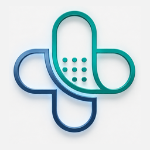

Wound Assessment Tool · Home Nursing
Standardised, guideline-based wound assessment for field documentation. Each module auto-calculates a validated severity score and generates a printable record for the referring physician. Built on IWGDF 2023, IWGDF/IDSA, ADA Standards of Care 2025, NPIAP/EPUAP 2019, CDC/NHSN and the Braden Scale.
CuraNova Home Nursing — Advanced Wound Care
Home Nursing · Advanced Wound Care
Enter your access code to open the shared patient log. Partners with their own login can change the email below.